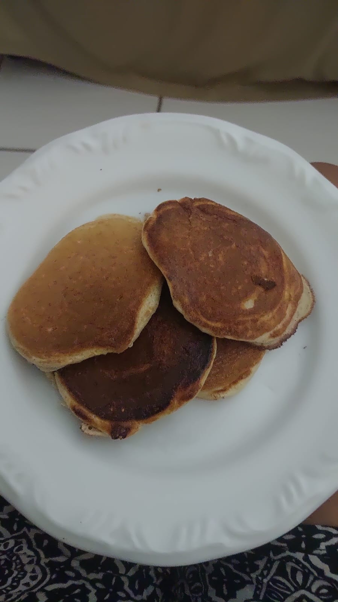

Panqueca De Whey

Descrição
Panqueca rica em proteina, feita com whey, perfeita para matar a "fome de doce" sem consumir muitas calorias.
Ingredientes
- 7ml de leite integral
- 1 ovo médio
- 10g de aveia
- 7g de fermento em pó químico
- 10g de whey protein
Modo de Preparo
- Misture todos os ingredientes
- Unte a panela
- Em fogo médio, adicione aos poucos a mistura
- Vire quando a parte de cima estiver com bolhas
- Retire 30 segundos depois de virar
Voltar ao Início